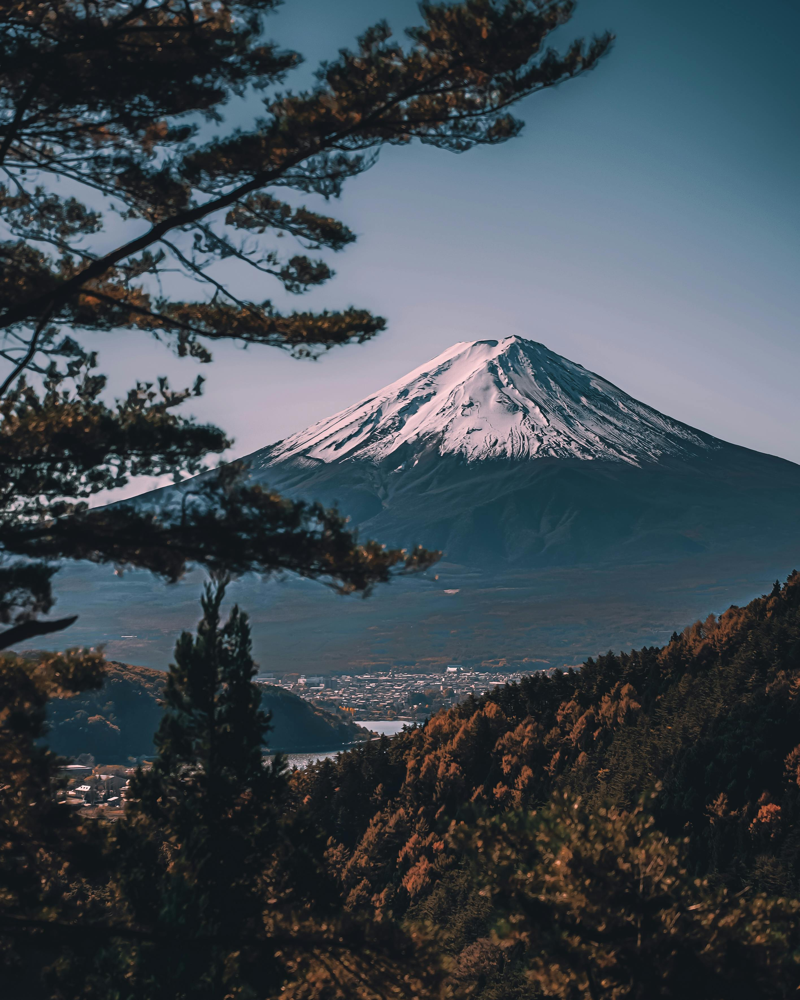
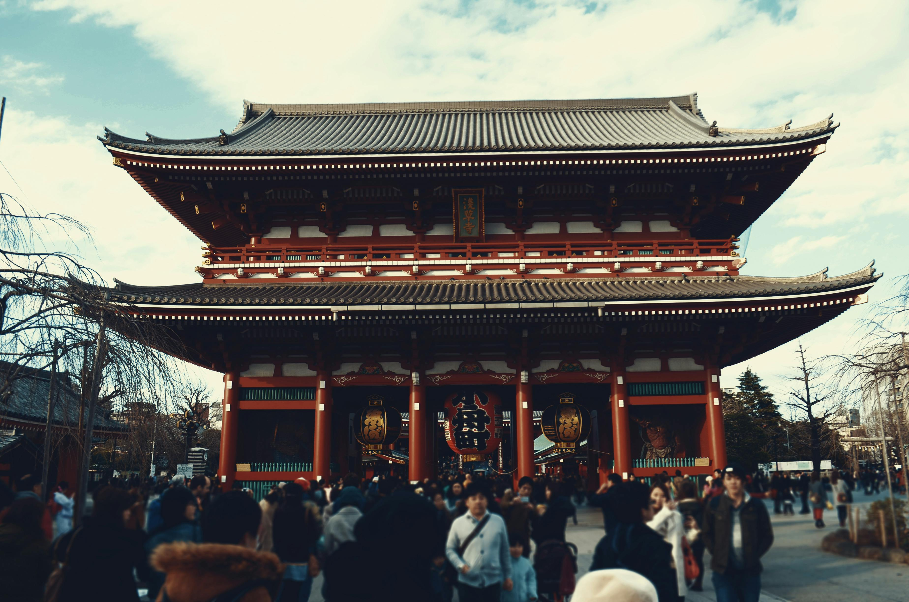
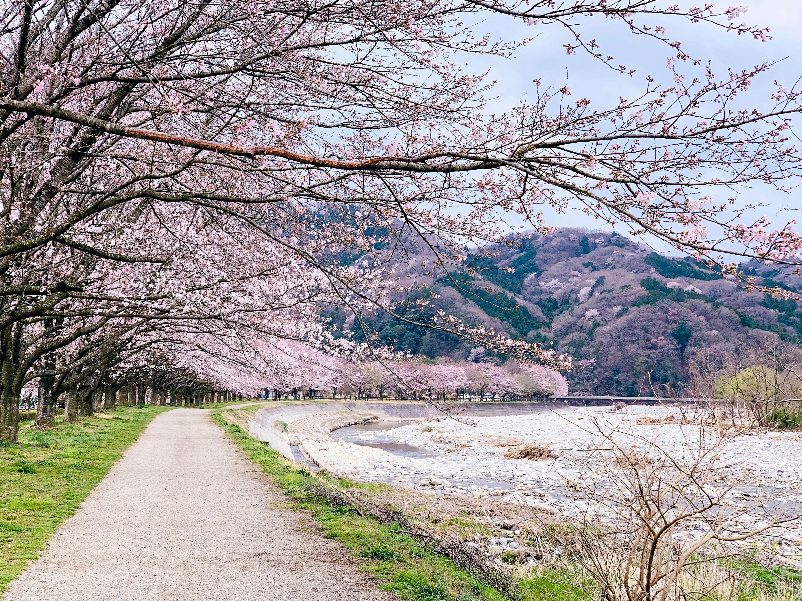
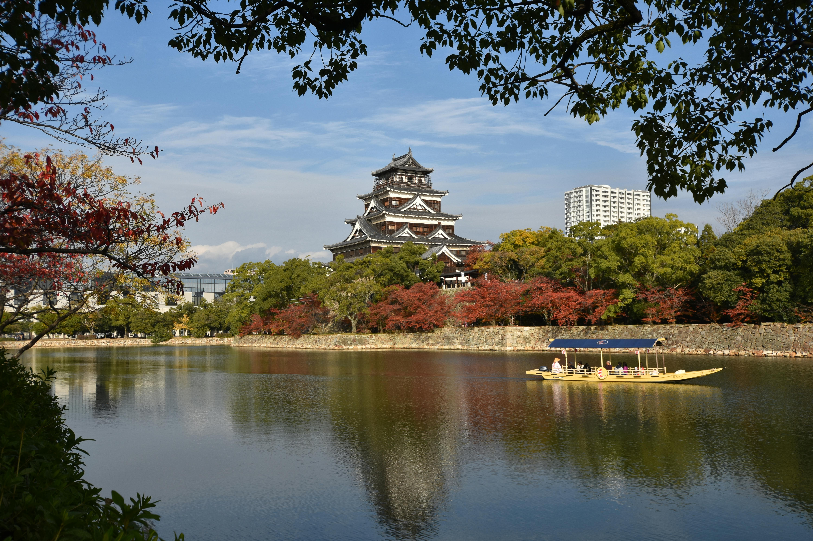

Japan Korea

Mt Fiji

Asakusa Kannon Temple

Seoul Tower

Cherry Blossom

Japan
Best Deal
Starts from 1,10,000
per person on twin sharing
9 Days 8 Nights
5 Cities 2 Countries
Japan: Tokyo 2N, Kyoto, Osaka 2N, Hiroshima 1N, Mt. Fuji
Korea: Seoul 3N
Days Plan
-
Day 1
Tokyo
Arrive in Tokyo. Tokyo – the capital of Japan and also one of the worlds most densely populated city. Admire the amazing city views from visit Shibuya Sky – a 360° open-air observation deck located in the iconic Shibuya Scramble Square building, this premier observation deck offers unparalleled panoramic views of the city. -
Day 2
Tokyo--Cherry Blossom
Visit Shinjuku Gyoen Park (During Cherry Blosson season) – which has over 1500 cherry trees that burst into vivid blooms making it a favorite spot of cherry blossom viewing. Enjoy an orientation city tour of Tokyo, a bustling metropolis and the capital of Japan. Start your tour with a Rainbow Bridge and visit to Asakusa Kanon Temple, one of Japan's most important Buddhist sites. Check out the elaborate gardens, architecture and shrines that surround the site. Also visit TeamLab Borderless - a group of artworks that form one continuous, borderless world. Later take a photo stop at Tokyo Sky Tree. -
Day 3
Tokyo--Mt.Fiji--Hiroshima
Proceed to the 5th level of Mt. Fuji (Subject to operation) and enjoy the picturesque view of Mt. Fuji (if bad weather or winter we will visit fuji visitor center). Later stroll around Lake Ashi and proceed to Hiroshima by bullet train. -
Day 4
Hiroshima--Osaka
Visit Hiroshima History Museum, watch Presentation on the history of Hiroshima City before the bomb, development and decision to drop the bomb, the lives of Hiroshima citizens during World War II and after the bombing and ends with information about the nuclear age and efforts for international peace. Take a ferry from Hiroshima Peace Park to Miyajima Island. Visit the Itsukushima Shrine a UNESCO World Heritage Site which is located on the island and also see the famous Torri gate from the shore. Later Proceed to Osaka. -
Day 5
Osaka--Nara--Kyoto
Proceed to Kyoto. En-route visit Todaiji Temple and the Deer Park at Nara. On arrival at Kyoto visit Golden Pavilion and Kiyomizu Temple. Later proceed to Osaka. -
Day 6
Osaka--Seoul
Osaka -
Day 7
Seoul--DMZ(Demilitarized Zone)--Seoul
Experience the extraordinary Korean Demilitarized Zone on the South Korean side, and learn about the war between the North and South and how the demilitarized strip of land came about. Get a rare glimpse of North Korea from the Dora Observatory. -
Day 8
Seoul
Proceed to city orientation tour Pass by Cheongwadae - official residence of the President of the Republic of Korea - The Korean name literally translates to “pavilion of blue tiles”, Gyeongbokgung Palace, National Folklore museum and Changdeokgung Palace. Visit Lotte World Tower Known for 5th tallest building in the world. Stroll around Korea’s largest wholesale and retail shopping district – Dongdaemun. -
Day 7
Departure from Seoul
Board the flight for your hometown. Tour concludes.
Tour Includes